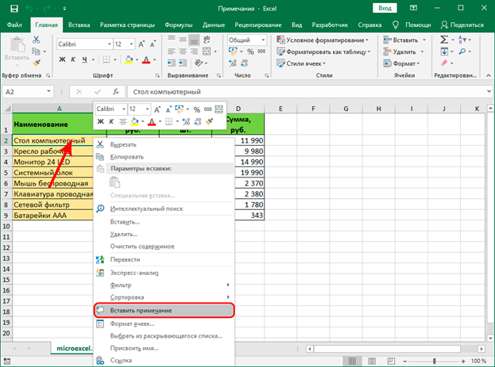
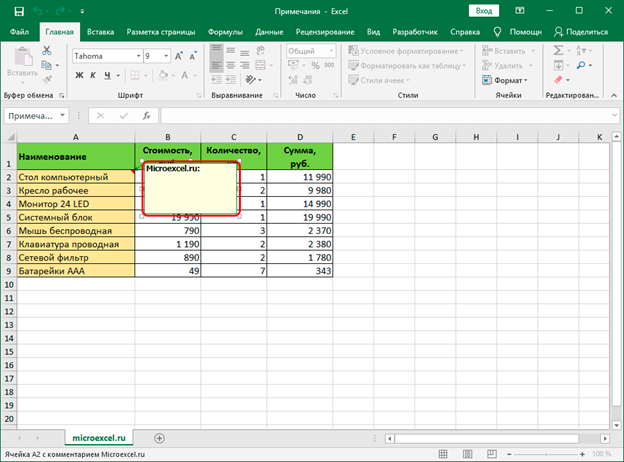
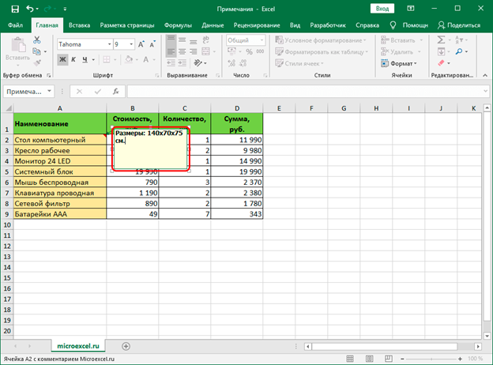
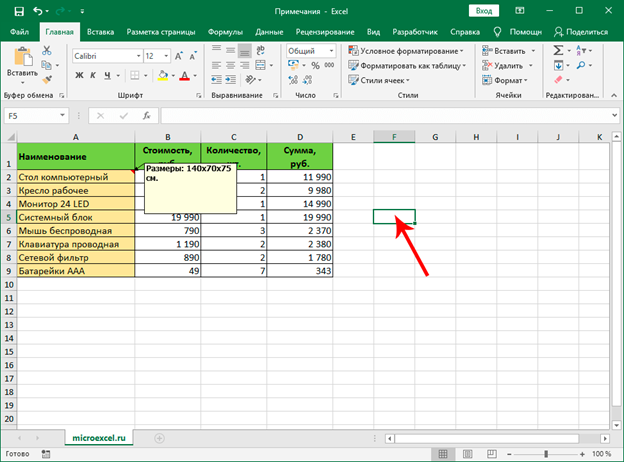
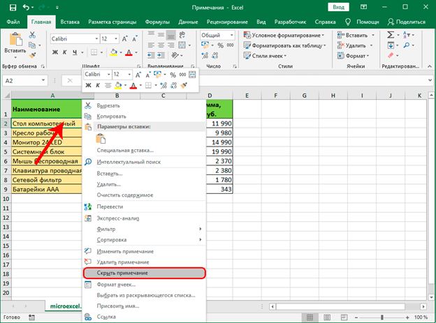
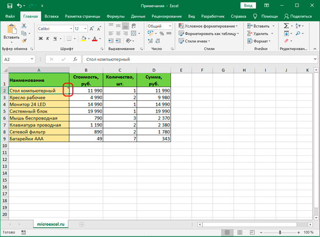

Microsoft Office Exel
Работаем с примечаниями
Самый распространенный вид примечаний – текстовый. Однако у пользователя, также, есть возможность вставлять фотографии в виде примечаний. Давайте разбираться по-порядку, как создавать, просматривать, редактировать и удалять комментарии к ячейкам в Excel.      
Создание
Алгоритм действий для создания примечаний следующий:
1. Переходим (выбираем) в ячейку, для которой хотим добавить комментарий. Щелкаем по ней правой кнопкой мыши и в появившемся перечне жмем “Вставить примечание”.
2. Появится небольшое поле примечания со стрелкой, указывающей на выбранную ячейку. В верхней строке по умолчанию будет указано имя пользователя. Мы можем его удалить или оставить (по желанию).
3. В качестве комментария мы можем добавить любую текстовую информацию.
4. После того, как нужная информация введена, просто щелкаем в любом другом месте листа за пределами поля примечания, чтобы завершить его создание.
5. Все готово, комментарий к ячейке успешно добавлен. Чтобы его скрыть, снова щелкаем правой кнопкой мыши по ячейке, и в появившемся контекстном меню выбираем пункт “Скрыть примечание”.
6. После этого в верхнем правом углу ячейки будет отображаться небольшой красный треугольник, свидетельствующий о том, что к этому элементу таблицы добавлено примечание.